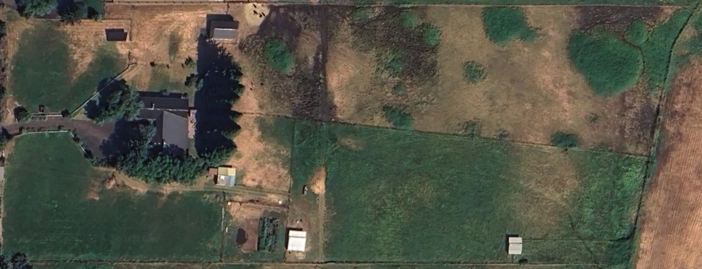

Fogs End Farm - Silvopasture Site Plan
5-acre regenerative silvopasture project area - Jackson County, OR

WETLAND
(~0.25 ac)
Swale 1
Swale 2
Swale 3
Swale 4
Swale 5
Swale 6
Swale 7
ACCESS CORRIDOR
P1
P2
P3
P4
P5
P6
P7
SW BARN
SE BARN
HOUSE
Nursery
IRRIGATION DITCH
N
Water
Flow
~400 ft (swale width)
Tolman Creek Rd
Contour Swales (tree lines on berms)
Paddocks (P1-P7)
Irrigation / Water Flow
Wetland Buffer
Barns
Project Boundary (5 acres)